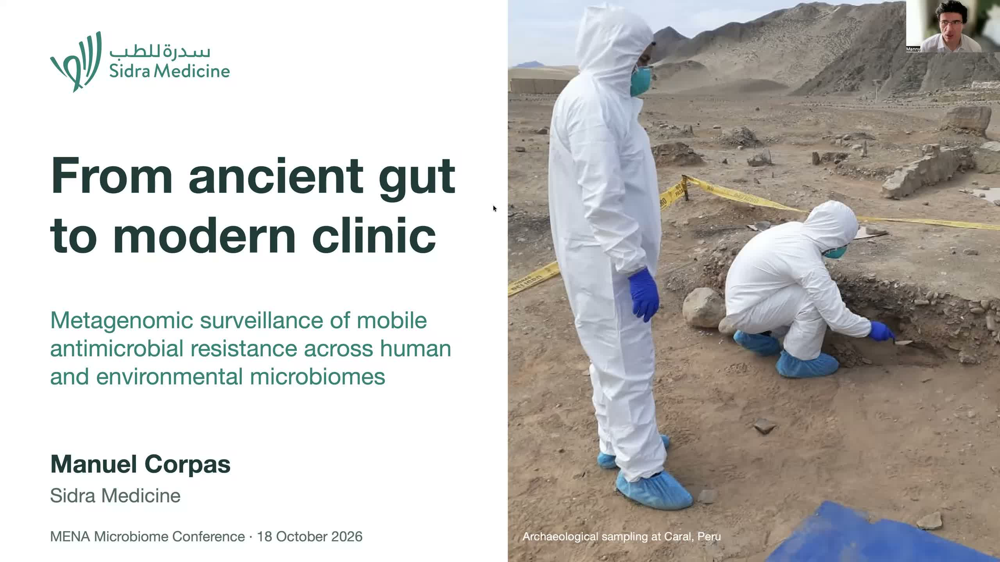

Personal Genomics Zone
From ancient gut to modern clinic
Metagenomic surveillance of mobile antimicrobial resistance across human and environmental microbiomes
Manuel Corpas presentation recording. Published 18 October 2026. Audio: 20 minutes 16 seconds.

Prepared for the MENA Microbiome Conference 2026. An unpublished Peru microbiome study asks what antimicrobial resistance annotations can establish across ancient gut, modern human and environmental microbiomes.
The presentation examines why a historical comparison changed with the counting method, distinguishes resistance signals from demonstrated mobility or clinical risk, and sets out bounded implications for surveillance. Processing remains incompletely harmonised; the work does not establish a validated Qatar or MENA surveillance protocol.
The supplied V9 audio is published unchanged.
Watch the presentation on YouTube | Read the companion article | Read on Substack
Download the original M4A audio | Subscribe through RSS